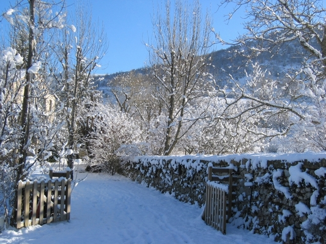
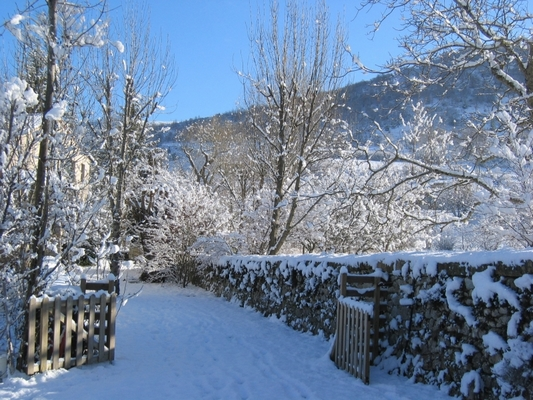

Venir à Bourdeaux
En toute saison, la Drôme est magnifique


Sabine a travaillé pendant 23 ans au service de publics en grande difficultés:
femmes victimes de violences conjugales, toxicomanes, ex détenus en réinsertion.
Son dernier poste consistait à prendre en charge en urgence les victimes d'infractions pénales graves
*****
Originaire de Marseille , Antonio a un parcours professionnel riche et diversifié.
Sa dernière expérience à l'école de la deuxième chance lui a permis d'accompagner
des jeunes en rupture avec le système scolaire.
Cette expérience lui a permis de cotoyer de nombreux chefs étoilés avec
lesquels il a monté un programme pour inciter les élèves de l'école à
s'engager dans les métiers de la restauration.
Amoureux depuis 10 ans , ils décident ensemble de quitter Marseille pour
s'installer à Bourdeaux .
Après 1 an de travaux qu'Antonio dirige
de main de maitre, ils ouvrent enfin leur établissement unique en son genre.
*****
La table d'Aimer c'est aimer la table, aimer partager, aimer être ensemble autour d'une table.
Passionnés de cuisine, Sabine et Antonio prennent soin de leurs hôtes autour de bons vins et d'une cuisine familiale et généreuse.
Ce lieu est avant tout un lieu de convivialité pour venir passer un moment "entre parenthèse"
Menu familial traditionnel (Entrée Plat Dessert)
Jeudi, vendredi et Samedi soir
15 tapas et 1 dessert
les classiques : tortillas, lupins, olives, amandes, manchego
poivrons marinés ou tomata
plus 7 tapas maison selon la saison
viandes ou poissons fumés maison, houmous, ail confit, feuilletés ...
Le dimanche soir, le service démarre à 18h00 et se termine à 21h00.
Charcuterie, fromage ,salade à volonté un dessert et un verre de vin composent la formule.
Le Machon c'est le moyen de lutter contre la grisaille du dimanche soir et finir le week end de façon conviviale
Nous avons la chance d'être entourés d'amis cuisiniers qui viennent volontier cuisiner à 4 mains.
Nous avons déjà proposé la bouillabaisse, les tartes flambées, la choucroute, la paella et nous avons
d'autres projets plein la tête
En toute saison, la Drôme est magnifique
